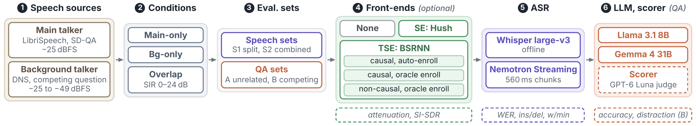

Cascaded voice agents pass an ASR transcript to an LLM. Background speech can reach this transcript and change the agent's response. We follow its effect through three stages of the agent: the front-end output, the ASR transcript and the LLM response.
This page complements the paper with audio examples and per-SIR results. All examples come from the evaluation sets of the paper.

1. What the front-ends remove
Front-end outputs on set S1: main talker at −25 dBFS, reverberant background talker from the DNS 2020 test set. Use headphones for the quiet levels.
Hush depends on the level, TSE does not
Hush attenuates a loud background talker by about 14 dB and a quiet one almost completely. In overlap, Hush falls below the unprocessed mixture at high SIR. TSE attenuates the background talker by a roughly constant amount at every level.
One clip at five levels. All clips of this example share one gain, so level differences remain audible.
Hush distorts the user mildly, without a cost in WER
On main-only speech, Hush has the lowest SI-SDR of all front-ends (17.1 dB on average). Both ASR models still transcribe its output without additional errors.
Main talker only, no background talker. This clip has an SI-SDR close to the Hush average.
2. What reaches the transcript
Background words that the ASR model writes into the transcript of the user's turn.
Equal attenuation, different intelligibility
TSE-NC attenuates the background talker more than TSE-C on average but leaks more words. At equal attenuation, the TSE-NC output keeps the background talker more intelligible.
Background talker only, at −25 dBFS. Both TSE models attenuate this clip by about 15.5 dB. Every transcribed word comes from the background talker.
Nemotron transcribes a quiet background talker
At 24 dB SIR without a front-end, Nemotron inserts 30% background words, compared with 2% for Whisper. The background question then reaches the LLM only through the Nemotron transcript.
Setting B (competing question), SIR 24 dB, no front-end. Same mixture, two ASR models.
3. What the agent answers
SD-QA (USA), 553 spoken questions. Setting A adds unrelated background speech, setting B a competing question. GPT-6 Luna judges each response.
Accuracy and distraction at every SIR
The paper reports averages over SIR. Select a setting, an ASR model and an LLM. Hover or use the arrow keys for the values.
Inserted words rarely change the answer
Most errors in the raw mixtures are insertions of background words. These insertions rarely prevent a correct answer.
Setting A, SIR 12 dB, Whisper, no front-end.
A front-end can change the question itself
Front-ends remove most insertions but can introduce substitutions and deletions in the user's question. These errors in the question determine the answer accuracy.
Setting A, SIR 0 dB, Whisper. At this SIR, the level-based Hush cannot separate the two talkers.
Accuracy follows S+D, not WER
Across all 160 evaluated sets, the accuracy drop relative to clean audio correlates strongly with substitutions and deletions (r = 0.94) and only moderately with the total WER (r = 0.74).
Each point is one set: setting × front-end × ASR × LLM × SIR. Hover over a legend entry to highlight one front-end.
Correct, but distracted
With a competing question and no front-end, 25–29% of the responses address the background question. About half of these responses also answer the user correctly, so accuracy alone misses this failure.
Setting B, SIR 12 dB, Whisper. The background talker speaks first.
Distraction follows insertions
Across the 80 sets of setting B, the distraction rate closely follows the insertion rate (r = 0.98) rather than S+D (r = 0.61).